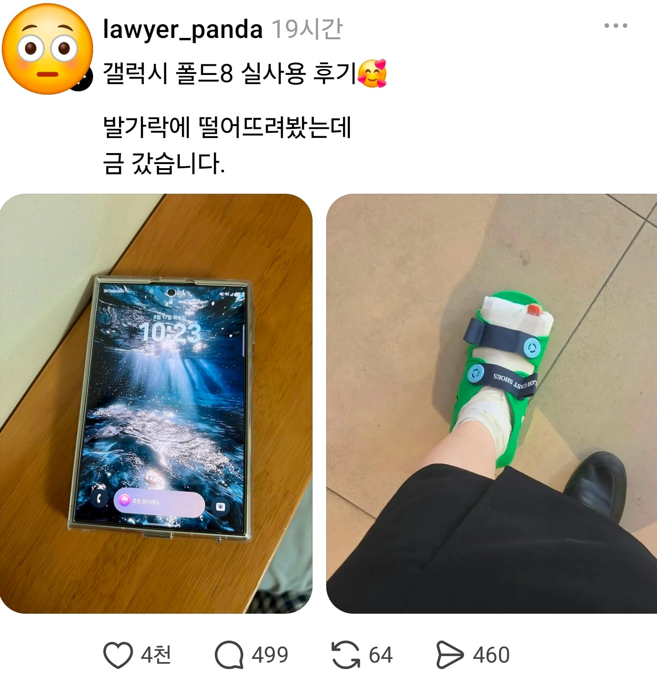

발가락의 내구성이 약해 논란

발가락의 내구성이 약해 논란
발가락을 희생 해서 폴드를 살렸으면 된거다 다친건 시간 지나면 낫잖아
낫는건 공짜인가봐
폴드 수리비 보다 싸자너~
친구 어머니가 강아지 동물병원
데리고 가면서 차라리 보험되는 친구가
아픈게 더 낫다고 말씀하시는걸 직접
들은적이ㅡ있다 ..ㅋㅋ
오이오이 실비에 골절진단금 낭낭하게타면 이득이라구?
폴드 수리비에 비할려면 10번은 분질러야..
나약한 육신이로군!
폴드의 보험이 빵빵한지
본인 실비보험이 빵빵한지 비교해봐야 할듯 ㅇㅇ
폴드는 자부담이 더 높을태니 실비승
폴드는 보험있어도 돈이나가지만
내가다치면 오히려 돈을 더 받는다고ㅋㄱ
이때껏 낸 보험료 이제 한번타먹는군
육신은 나약하다
폴드 수리비 VS 발가락 골절 치료비
이렇게 하면 후자는 골절로 일 못하면 그것도 보상 되나?
일단 발가락은 실비랑 손보에서 돈 나와서 중복 받으면 이득임
보험마다 다름
ㅋㅋㅋㅋㅋㅋㅋㅋㅋㅋ 아니 왜 금이갓대!!!!!!!
그럼 금이가지 은이가냐?

은가누~~? 풉킥키
둘중 하나는 죽는게 맞다
폰 발가락에 떨구는거 진짜 위험함 나도 옛날에 아이폰xr쓸때 전화중에 떨궜다가 금갔음
어느쪽이?
폰 모서리를 엄지발가락에 떨궜음
발가락에 금간건지 폰 모서리에 금갔는지를 묻는듯
본문 내용만봐도 발가락이지
폴드 부시는거 보다 발가락 부시는게 낫긴해
육신이 나약하구나
나약한 뇨속
백아연2도 들고다니다 떨구면 금갔나.
진짜 튼튼하긴 했는데 ㅋㅋ
ㅋㅋㅋ 그건 뼈가 움푹 패일수도 있어
아이폰 신제품 나올때 갤럭시 튼튼함으로 국뽕 부둥부둥은 오랜 전통
AS 안되나?
육신 AS는 부모님에게 상의하시기 바랍니다;
폴드 8 실사용자들 있음? 진짜 만족힘? 난 스피커 진짜 개열받는데 도저히 적응이 안됨
극한으로 얇게 만든다고 희생한게 스피커라...
나는 공홈 12시 떙 예약자라 졸라 빨리받음. 벌써 두달은 된듯. 근데 스피커 적응하는데 한달정도 걸린듯. 그 담부턴 그냥저냥 신경안쓰이는정도까진 됐음.
굿락인지 스피커어플인지 잘 기억은 안나는데 아무튼 그걸로 eq같은거 조금 만져보면 좀 괜찮아진다는 얘기는 있더
대신에 핸드폰은 멀쩡하죠?
폴드8은 전손나지만
발가락은 다시 붙으니까 ㅋㅋㅋ
그러니까 폴드8을 떨궈도 폰은 멀쩡하고 오히려 Gold가 생긴다는거지?
너와 나 둘중하나는 못접는거야